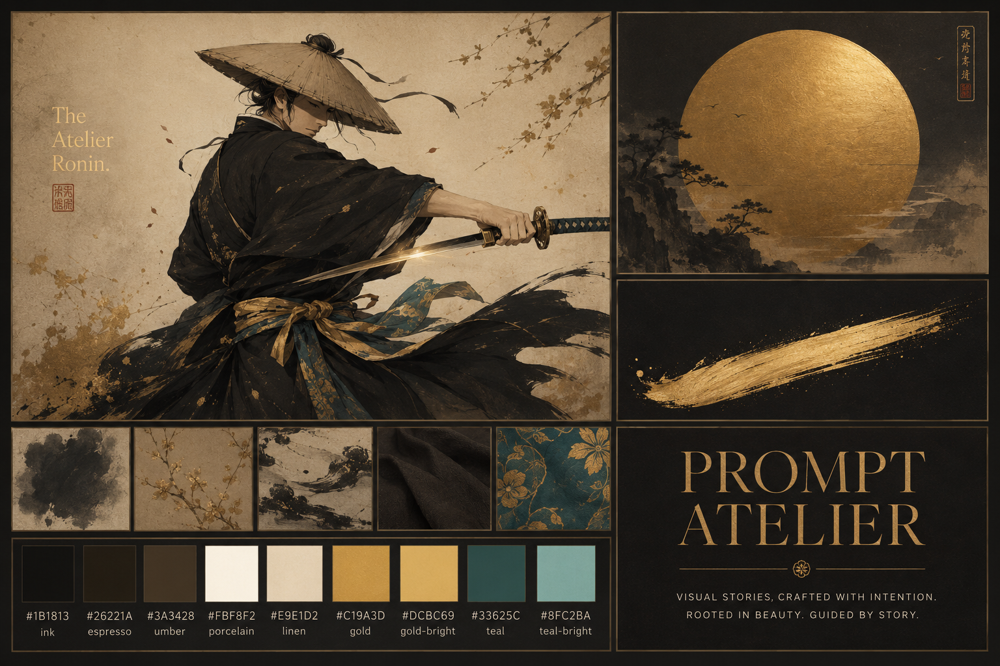
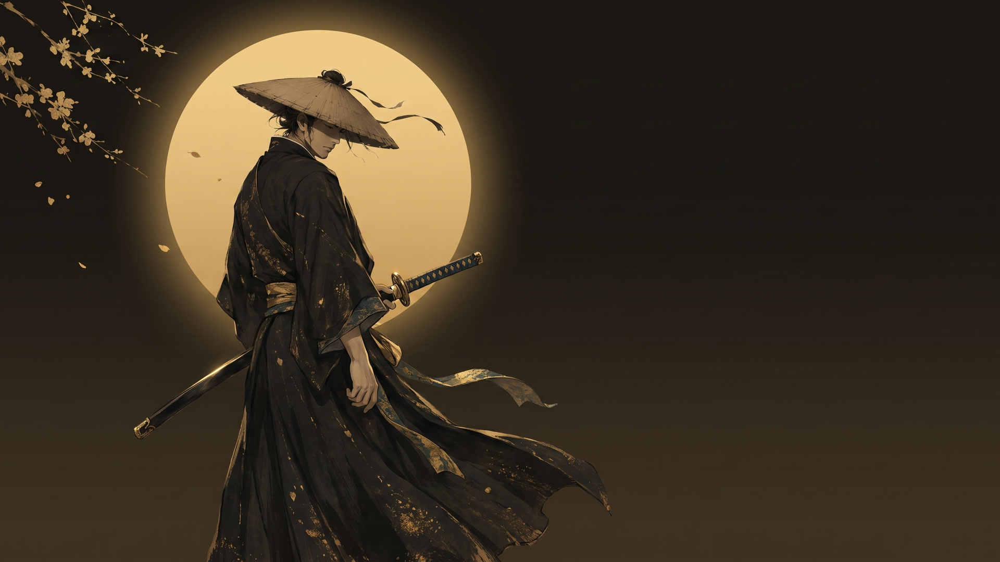
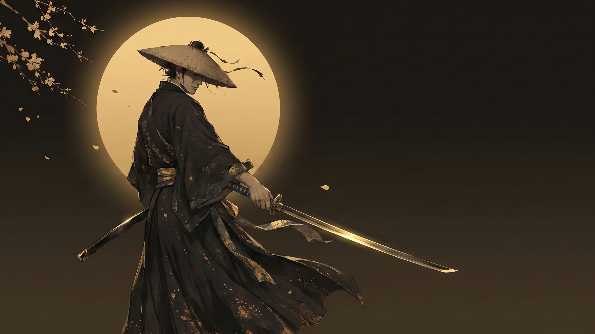
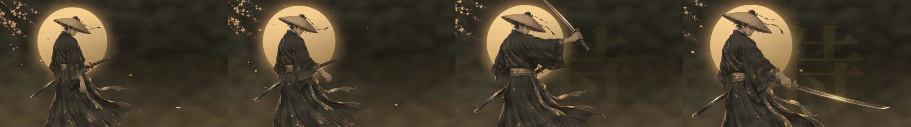

A scroll-stopping samurai title animation, rebuilt from scratch in the Prompt Atelier house style. No stock footage, no After Effects, no keyframe-by-keyframe animation. Just a moodboard, two AI-generated keyframes, a single video generation, and a kinetic title composited in code. This is the whole recipe — including the exact prompts and the one idea that makes AI motion look flawless.
Sixty seconds, start to finish — the moodboard, the two keyframes, the single AI generation and the code that finished it. The full eight-second scene plays inside.
The Atelier Ronin — the reel · how an 8-second title was made, in 60 seconds · watch on YouTube ↗
The trap with AI video is asking one model to do everything — motion, text, effects — and getting drift, garbled type and mush. The fix is a division of labour: let the AI generate only a clean motion plate, and do every legible, branded element in Remotion where it's frame-perfect and editable.
Each step ships something the next one depends on — and each cheap artifact is approved before any expensive one is bought.
Before generating anything animatable, the look is fixed: a warm, dark editorial atelier — ink-black robes, gold leaf, a single teal accent, a rising gold sun. The moodboard was generated free in ChatGPT (saving paid credits), then treated as the north star for every later frame.

Create a single landscape moodboard for an animated title scene, "The Atelier Ronin." A lone ronin mid-turn drawing a katana; ink-black and espresso robes, a gold-and-teal sash, porcelain skin highlights, a gold gleam on the blade. A large brushed gold sun disc. A single sweeping gold ink brushstroke. A palette swatch row: ink #1B1813, espresso #26221A, gold #C19A3D, gold-bright #DCBC69, teal #33625C. A type tile: "PROMPT ATELIER" in an elegant high-contrast serif, gold on dark. Warm, dark, hand-crafted, Japanese-minimalist meets fine-art atelier.
The moodboard's colours become a locked token set — the same values that drive the whole Prompt Atelier showreel. Gold is the hero accent; teal appears only as a sash detail; the dark warm stage is what makes the gold land. Nothing downstream is allowed to wander off it.
Free-running AI video drifts and redraws faces. So the motion is pinned at both ends. Using Nano Banana (best-in-class for character consistency), a single character reference is recomposed into a wide START frame — coiled, blade sheathed, clean space reserved on the right. Then the END frame is generated image-to-image from the start, so the character stays pixel-identical while only the pose and framing change: blade drawn, settled, even more space for the title.


Both were approved as cheap images (~18 credits each) before spending a single video credit.
Use the attached reference as the EXACT character. Recompose into a wide 16:9 landscape. Place the ronin in the LEFT third, three-quarters turned away, at the START of drawing his katana — hand on hilt, blade only just clearing the scabbard. Show a fuller standing figure. A large soft gold sun disc glows behind, left-of-center. Keep the entire RIGHT HALF as clean, warm-dark negative space. No text, no letters, no seal stamps.
The plate is a single Seedance 2.0 render conditioned on both keyframes (first_frame + last_frame) — no clips, no stitching. The secret to flawless AI motion isn't the model, it's restraint: the body barely rotates, and the drama is carried by cloth inertia, the travelling blade gleam, and one slow camera move. The prompt is mostly physics and a hard list of forbidden artifacts.

First image = frame 0; last image = the final frame. Animate a smooth, physically believable draw. The ronin does NOT spin; his body barely rotates. Beats: idle breath and drifting ribbon → complete the draw in one smooth arc, head turning slightly → blade reaches full extension, a gold gleam travels the edge → everything decelerates and settles. Camera: ONE move — a slow push-in that opens the right side.
Forbidden: extra limbs, a second sword, the blade bending or melting, face distortion, any text appearing, camera shake, full body rotation.Kie.ai offers a dozen video models. The tempting one — Kling Motion Control — transfers a real performer's body and face onto a character. But our ronin is back-turned, face hidden, so its biggest strength has nothing to grip. Tight keyframes on Seedance win on control.
| Model | First + last frame | Motion transfer | Verdict for this shot |
|---|---|---|---|
| Seedance 2.0 | Yes | Yes (separate mode) | Chosen. Full control of both ends, one generation, native 1080p 16:9. |
| Wan 2.7 I2V | Yes | — | Strong backup; tuned to reduce drift. |
| Kling 3.0 | Yes | — | Excellent, slightly pricier. |
| Kling Motion Control | image + driver | Yes | Best for visible performers — wrong tool for a hidden face. |
| Veo 3.1 | Yes | — | Top fidelity, priciest. |
The plate becomes the background of a React-driven Remotion composition. Everything legible or branded is drawn in code, frame-perfect: the title snaps in letter by letter with a staggered spring overshoot; the camera zooms and slides left as it lands; a huge faint 侍 sits behind it; a red seal stamps in to sign off; gold particles drift on deterministic noise and a soft turbulence haze breathes over the whole frame.
text.split('').map((ch, i) => {
const s = spring({ frame: frame - delay - i * 3, fps,
config: { damping: 12, stiffness: 190, mass: 0.6 } });
return {ch};
})Particles use Remotion's deterministic random() and @remotion/noise (never Math.random, which would flicker between renders); the haze is an animated SVG feTurbulence on a screen blend. Because it's all code, every timing, colour and position is a one-line change.
Two approved keyframes turn an unpredictable generation into a controlled interpolation. Nearly every AI-video failure mode — drift, extra limbs, garbled faces — disappears when the model only has to travel between two frames you've already blessed.
A small, weighted action with one camera move looks like a master swordsman. A big spin makes the model invent geometry it was never given. Less motion, cleaner render.
AI-baked type warps and shimmers. Kept in Remotion, "PROMPT ATELIER" is letter-perfect, on-brand, and editable to the pixel — and it can animate with real character.
Images are cheap (~18 credits); a 1080p Seedance render is not (~630). Approve every keyframe first. And re-encode the plate with dense keyframes before Remotion, or it won't seek cleanly.